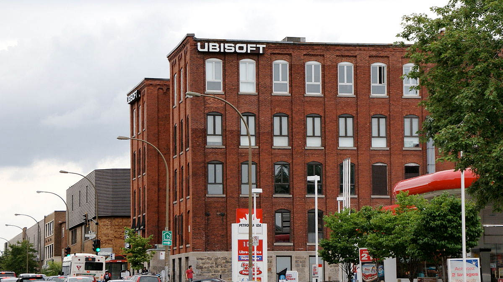

Historia
La historia de Ubisoft comienza con una familia. Los cinco hermanos Guillemot, que vieron una oportunidad en el creciente negocio del desarrollo de software, fundaron Ubisoft en 1986 para crear y distribuir videojuegos en todo el mundo. Desde sus primeros lanzamientos, como Zombi para el ordenador domestico, hasta el exitoso juego de plataformas de los años 90 Rayman, el espiritu creativo inicial de Ubisoft allano el camino para su futuro.
Innovacion
A medida que Ubisoft paso de ser una empresa familiar a convertirse en una organizacion global, nuestro deseo de adoptar nuevas ideas y tecnologias nunca flaqueo. Ya sea al ser pioneros en la iluminacion dinamica para Tom Clancy's Splinter Cell en PlayStation 2, al hacer que los jugadores se muevan con los controles de movimiento en Just Dance o al crear mundos abiertos sistemicos complejos en Assassin's Creed, Watch Dogs y The Division, encontrar nuevas y emocionantes formas de crear juegos es mas que una estrategia comercial: es parte de nuestro ADN.